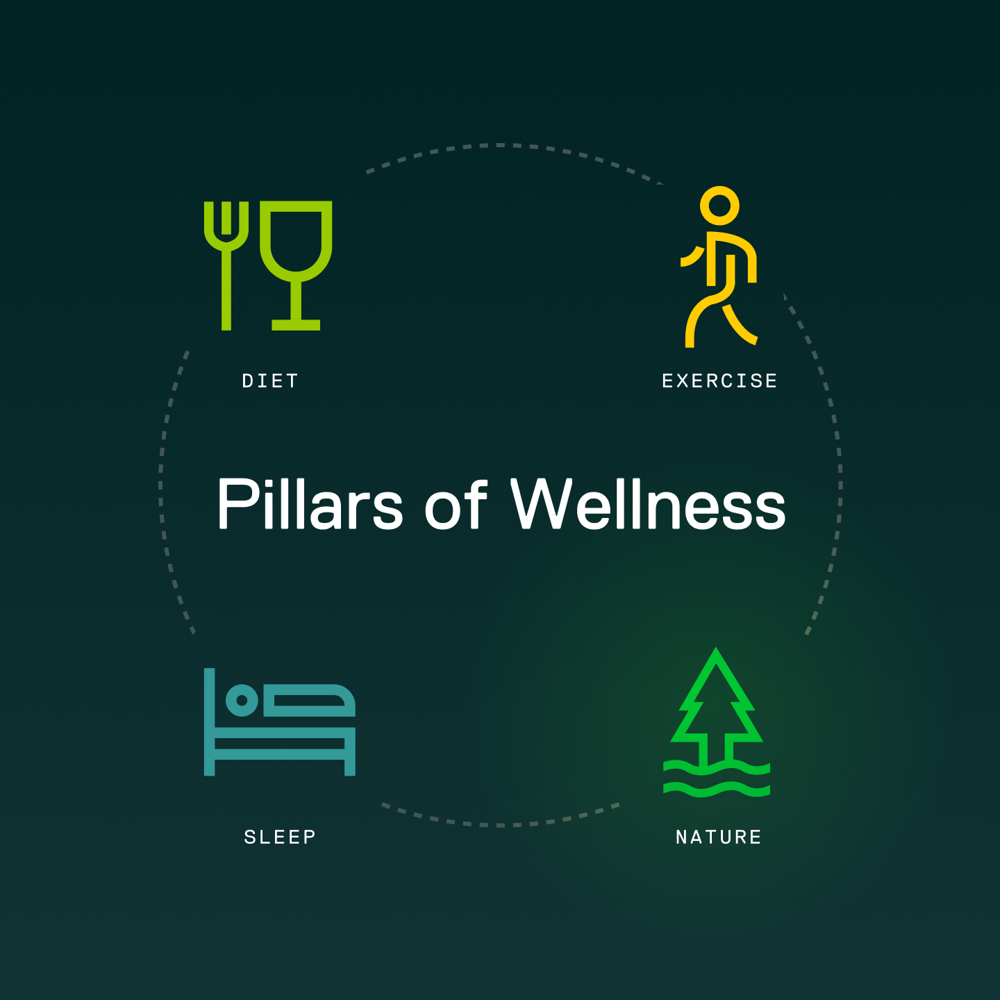

Case Study Designing a mobile nature-prescription app that encourages time outside.
Overview
Client
NatureQuant
Role
Lead Product Designer
Website
https://naturequant.com/naturedose
Contributions
- UI/UX Design
- Design Systems
- Data Visualization
- Front-End Development
- Strategic Communication
I led the design of NatureDose®, a mobile app that tracks how much time users spend outdoors or exposed to nature, and encourages more of it through gamification, challenges, and meaningful features.
My work spanned rapid prototyping, feature strategy, UI/UX for both iOS and Android, website for launch, App Store screens, and ongoing additions like badges, “find nearby parks,” and team challenges. The result: a clearer, engaging experience that bridges wellness, technology, and time in nature.
Completely redesigned and
Unique samples to explore
Design system to provide cohesion in product design, prototyping, and development.

While scientific research shows major benefits of nature exposure, the tools to track, encourage, and build habits around it were limited. NatureDose aimed to fill that gap by making a nature “prescription” accessible and engaging.
At NatureQuant, the core mission is to treat nature exposure like it’s one of the essential habits of health—right alongside diet, exercise, and sleep.
The specific challenges were:
Translate scientific research on nature and health into a consumer-friendly mobile experience.
Design tools that motivate users to spend more time outdoors and track real progress.
Ensure consistency across iOS, Android, and web—while keeping the experience lightweight and engaging.

Rapid Prototyping & Feature Design
I sketched and prototyped ideas quickly, refining features like adjustable weekly goals, session tracking, and nature-quality scoring for both iOS and Android platforms.
Website & Launch Stack
I designed the website and App Store screens to communicate the app’s promise—“Measure your nature dose,” “Earn badges for outdoor time,” and “Find green spaces near you.”
Feature Enhancements
After launch, we introduced gamified features like badges and team challenges, local discovery (“Find Nearby Parks”), and UX improvements for smoother onboarding and daily use.
Design System Integration
Maintained cross-platform consistency through unified typography, iconography, and color systems that aligned with the NatureQuant brand while optimizing for mobile usability.
We moved from concept to functioning mobile product through iterative design and development. Each prototype tested how best to motivate outdoor behavior while keeping data and visuals simple and actionable.
The final app experience combined passive nature tracking, daily goal-setting, and visual feedback loops—turning abstract health research into an everyday wellness habit.
NatureDose has been recognized as a meaningful tool in wellness tracking—positioned as a nature-prescription tracker supported by research and partnerships (e.g., Outside Interactive).
Users can now set goals, track sessions, learn how “nature quality” matters (via NatureScore®), and see their progress visually. The design bridges nature, technology, and wellness—encouraging time outside in a measurable, motivating way.
This project reminded me how design can help translate research into daily habits. Nature exposure is backed by hundreds of studies, but until now, few tools made it clear, accessible, and motivating.
By designing fast, iterative interfaces, mobile features, launch communications, and gamified experiences, we made “get outside more” feel like something you can track, measure, and succeed at.